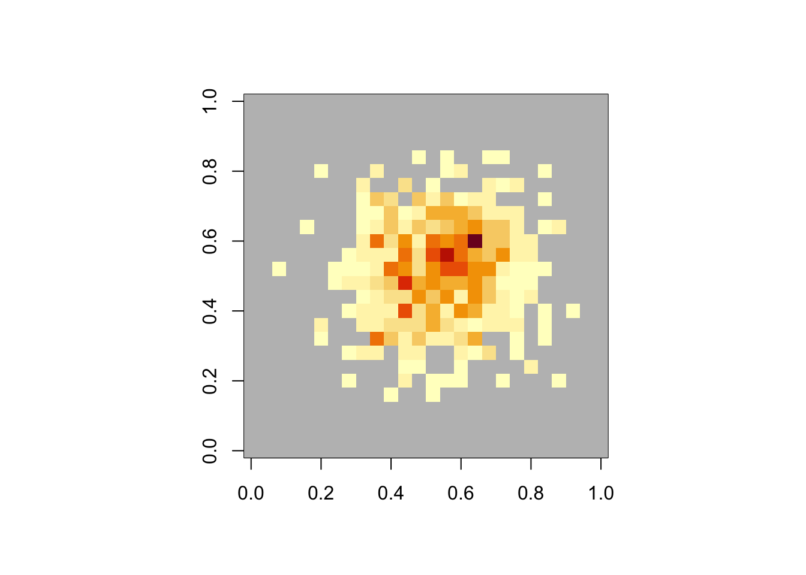
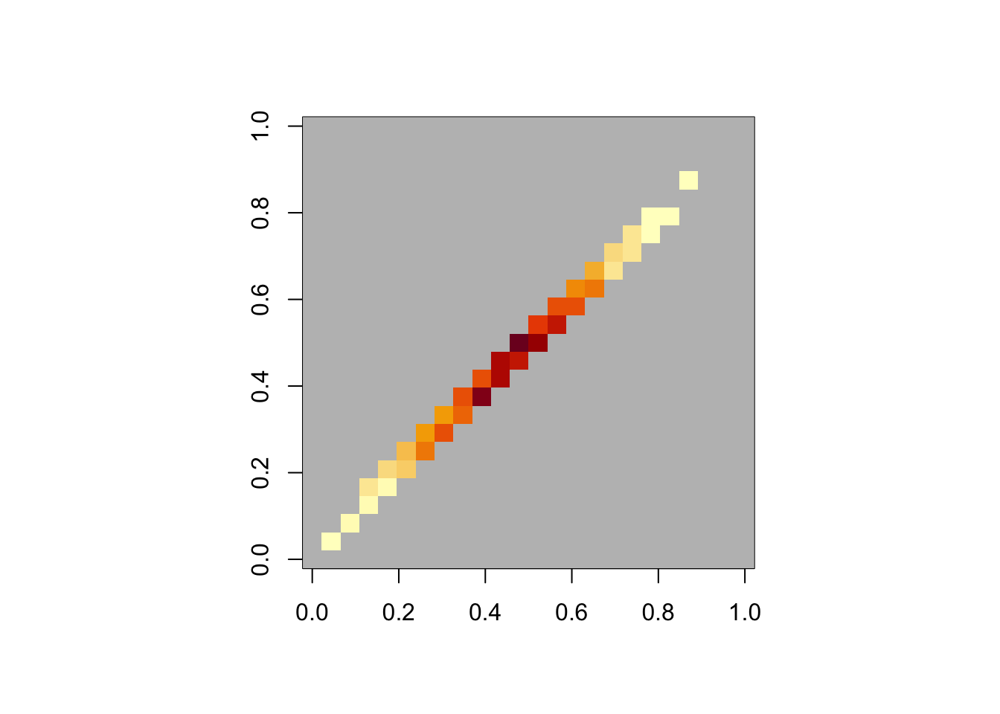

As everyone knows, if you want to repeat a sequence of random numbers in statistical software1 you can reset your software’s random number stream to the same position and everything will deterministically repeat2. What’s slightly more complicated is if you want ‘the same’ random numbers from a different set of parameters.
Suppose you have some simulations, which might be estimating the operating characteristics of a trial with some form of Bayesian response-adaptive randomisation. Running the whole simulation 10,000 times with MCMC for each replicate is slow and annoying.3 You might want to look at some variational approximation instead, and if it isn’t accurate enough you might want to augment it with proper MCMC for a carefully chosen subset of the replicates.
In order to run the MCMC on “the same” data as the variational method, you need to be able to generate “the same” data. This is easy for ordinary randomisation: you just generate the same stream of imaginary participants, they get randomised the same way, and you run the two analyses.4 But with response-adaptive randomisation your allocation probabilities for different treatments depend on analyses of the accumulating data. When you switch from a variational approximation to MCMC, the interim analyses and the subsequent allocation probabilities may change.
Getting properly coupled streams of imaginary participants now requires some conditions.
First, choosing treatment arms with the specified randomisation probabilities uses **the same number* of draws from the random stream as the randomisation probabilities change. This is critical; a failure here means that future data for the MCMC and variational analyses might be completely different.
Second, the treatment choice for a given random stream \({\cal U}=U_1,U_2,U_3,\dots\) and vector of allocation probabilities \(\langle p_k\rangle\) changes as little as possible when \(p_k\) changes with \({\cal U}\) held constant. We want to get “the same” treatment allocations, or more precisely, allocations in the same place in the distribution. If our random number generators for a distribution \(F\) worked just by taking \(F^{-1}(U_1)\), we would automatically satisfy this second condition: the Frech'et bounds on similarity say that’s how you get the best agreement between two numbers from different distributions.
Some of the random number generators in R do work like this: by default, rnorm(1,0,1) is computed as qnorm(runif(1),0,1), so rnorm(1,m,s) is a linear function of rnorm(1,0,1) for the same random number stream. Some don’t, or do only for certain parameter values: here we get close coupling for rhyper with small parameters but not with larger parameters where the algorithm is different. You need to read the documentation, or perhaps the source.
set.seed(2025-3-4)
a<-rhyper(1000,20,20,6)
set.seed(2025-3-4)
b<-rhyper(1000,20,20,7)
table(a,b)## b
## a 0 1 2 3 4 5 6 7
## 0 3 7 0 0 0 0 0 0
## 1 0 37 49 0 0 0 0 0
## 2 0 0 122 124 0 0 0 0
## 3 0 0 0 156 179 0 0 0
## 4 0 0 0 0 129 116 0 0
## 5 0 0 0 0 0 39 28 0
## 6 0 0 0 0 0 0 6 5set.seed(2025-3-4)
a<-rhyper(1000,200,200,69)
set.seed(2025-3-4)
b<-rhyper(1000,200,200,70)
par(pty="s")
image(table(a,b),
col=c("grey",hcl.colors(12, "YlOrRd", rev = TRUE)))
Deep learners will be familiar with the rnorm case under the name of “the reparametrisation trick”: if you want to do gradient descent on a variational autoencoder you need to differentiate a Gaussian random noise input with respect to its parameters, so you need a coupled family of Gaussian random noises. If your programming language doesn’t provide these, you can use \(Z_{\mu,\sigma}=Z_{0,1}\times\sigma+\mu\) to do it yourself.
Going back to the simulation question: is sample(, prob=, replace=TRUE) implemented to produce coupled outputs with constant consumption of random numbers? Well, first, does it seem to be?
set.seed(2025-3-4)
a<-sample(1:4, prob=1:4, replace=TRUE,size=1000)
set.seed(2025-3-4)
b<-sample(1:4, prob=(1:4)+0.1, replace=TRUE,size=1000)
table(a,b)## b
## a 1 2 3 4
## 1 84 0 0 0
## 2 7 207 0 0
## 3 0 4 298 0
## 4 0 0 7 393Looks promising. If we check the documentation for sample it says that “Walker’s alias method” is used “when there are more than 200 reasonably probable values”, which is not going to be an issue in the platform-trial context but might matter in other contexts. We also need to check that sample uses a constant number of random uniforms, and here we really should look at the implementation: in src/main/random.c in ProbSampleReplace we see
/* compute the sample */
for (i = 0; i < nans; i++) {
rU = unif_rand();
for (j = 0; j < nm1; j++) {
if (rU <= p[j])
break;
}
ans[i] = perm[j];
}where the loop over i indexes the numbers we’re generating and there’s one unif_rand() for each one.
If you needed a whole library of nicely-coupled random number generators I think you’d be best off using the quantile functions to define them, for example:
my_rhyper<-function(n,...){
u<-runif(n)
qhyper(u,...)
}
set.seed(2025-3-4)
a<-my_rhyper(1000,200,200,69)
set.seed(2025-3-4)
b<-my_rhyper(1000,200,200,70)
par(pty="s")
image(table(a,b),
col=c("grey",hcl.colors(20, "YlOrRd", rev = TRUE)))
and we’re getting 1000 put of 1000 with either a==b or a+1==b